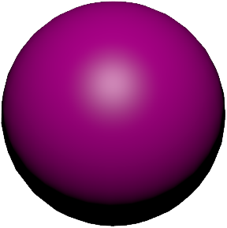
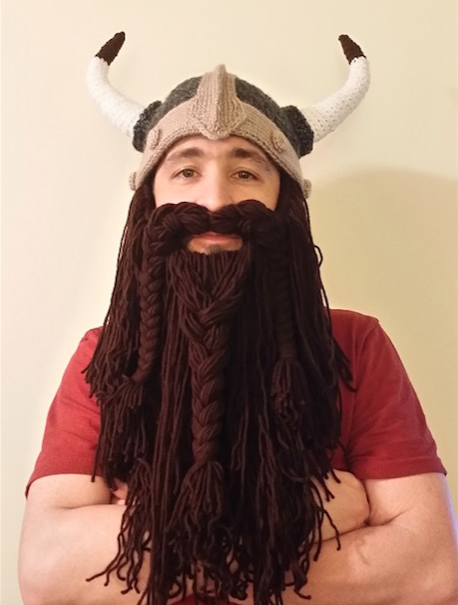
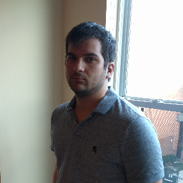

Break Out in Java Script
University of Maryland University College - CMSC 495
Welcome to the Break Out game website! The purpose of this capstone project is to create an interactive web game to showcase our coding and development skills obtained through the undergraduate computer science program at University of Maryland University College. Please use the above navigation bar to explore our website. The specific contributions of each team member are listed below.Play Game
Team Members:
Brian Hagerty
I selected this project, because the nature of the computer industry is heavily reliant on a user-interface and a back-end to support the product. I've often found the best way to learn about a technology is to pick a subject which is interesting. While the subject matter of creating a web game is something we'll unlikely encounter in the field, it's fun topic and requires a depth of knowledge. I think we'll all be able to say we learned something new after it is complete.
Since this project was my idea, I ended up as project lead by default. My purpose in this project was to provide coordination and technical assistance wherever needed. The more successful my team is, the more successful this project will be, and I have a great team.
Yale Levine
I chose to work on this project because I've always wanted to work on a game. Because my undergraduate career is drawing to a close with this class, I felt it was a good opportunity to do so.
I have been a professional web developer since 2012 and have served on a team in a variety of capacities (front-end, back-end, technical lead, etc.). For this project, I chose a role to cater to my strengths and allow the other members of the team take on roles that they felt comfortable with. I built the Node.js/MySQL side of the project, placed it in an AWS environment, and assisted people with asynchronous behavior and git version tracking. I hope everyone can enjoy our creation.
Chris Fearey
My primary role in this project was web page development. I helped with designing the home page, the help page, and the high score page. This project provided me with a wonderful opportunity to learn more about HTML and CSS.
Overall, this was a really fun project to build. Our team really came together and produced an exciting project!
Caleb Hansard
I selected this project because I thought developing a game would be fun and interesting. I didn’t have much experience with game development and I thought this would be a good opportunity to learn more about it and have some fun. As the lead JavaScript developer for this project, I added many of the features to the game, I hope you enjoy it!
Denis Ngong

(Add Description)